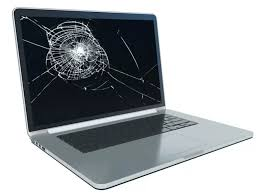
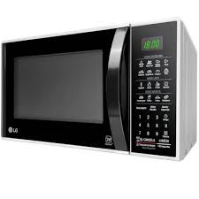

Serviços Técnicos Especializados
Fazemos manutenção em seu equipamento com total seriedade. Confira nossos principais serviços:
 ✅ Formatação de sistema operacional Windows 10 ou Windows 11
✅ Formatação de sistema operacional Windows 10 ou Windows 11
✅ Recuperação de carcaça trincada ou quebrada de notebooks - resinagem
✅ Troca de teclado do notebook
✅ Troca de bateria de notebook
 ✅ Troca de ventoinha/cooler e fonte ATX para PC
✅ Troca de ventoinha/cooler e fonte ATX para PC
 ✅ Manutençao em impressora
✅ Manutençao em impressora
 ✅ Limpeza interna em notebooks, PCs e PCs gamer
✅ Limpeza interna em notebooks, PCs e PCs gamer

✅

✅ Recuperação de placa-mãe
✅ Montagem de computador comum ou PC gamer
✅ Reparo técnico em desktops e notebooks
 ✅ Instalação e configuração de rede TCP/IP
✅ Instalação e configuração de rede TCP/IP
 ✅ Configuração de câmeras CFTV para acesso externo
✅ Configuração de câmeras CFTV para acesso externo
 ✅ Aumente a velocidade do pc/note
✅ Aumente a velocidade do pc/note
Galeria de Fotos


Contato
Fale conosco de DOMINGO a SEXTA pelo WhatsApp 31 998116093:
Rua Sulferino Bairro Vitoria, Belo horizonte - MG: